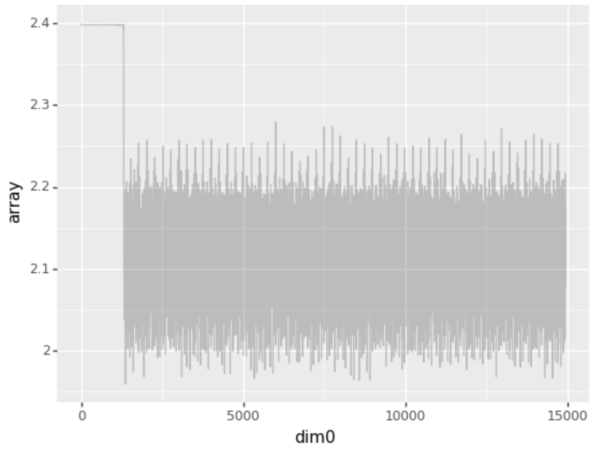

Unsupervised orientation¶
Here, I briefly discuss the behavior of the simplest possible nonlinear geometric model. It mostly consists of products of previous code made more easily accessible.
Task¶
The task is to distinguish between orientation (which is predictable) and position (which is unpredictable). The setting is as small as possible.
[3]:
import lettertask as lt
agbm = lt.data.AtomicGeometricBinaryModel(width=2, samples=50, change_probability=0.2)
agbm.animate()
[3]:
<IPython.core.display.Image object>
In the case discussed below, the probability of change is 0.05 and we consider 100000 samples (which seems like too much).
Model notation¶
I am using an arrow notation to denote the different models. The nonlinearity \(\sigma\) is a rectified linear unit, numbers represent dimensions at a certain stage, i. e.
is a notation for a network where a four dimensional stimulus is densely connected to a two-dimensional layer, which is nonlinearly transformed and then densely connected a one-dimensional layer.
Way too small¶
First, I estimated a model using one latent feature:
Though this could not have solved the task completely, I wanted to see whether it would extract one feature. Even with respect to this, the model seemed challenged.
Still too small¶
The model
is sufficient for the problem. I demonstrated this by using such a model to solve the supervised task. However, in practice, the contrastive coding algorithm found two latent categories: left vertical rectangles and everything else. It was therefore not completely unsuccessful, but also not optimal.
Too big¶
Before I made the previous model work, I studied the general feasibility by using on overly complex model:
This model appeared to already have converged, but by further running the optimization, it eventually recovered the correct dimension:

This suggests a highly nonlinear loss landscape with sudden gradient changes – an interesting dynamic I hope to explore further.
Minimal expressiveness?¶
The minimally expressive model capable of recovering orientation for contrastive coding appears to be given by
if we restrict ourselves to this depth.
Next steps¶
In order to make the above observation more reliable, I will implement an unsupervised predictive autoencoder solving these tasks and then study the performances of these two algorithms as compared to their supervised versions in an extensive manner. I aim to use the pipeline presented on the message board for this purpose.